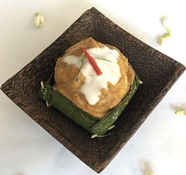

Home
Fish Amok

I won't lie, I was somewhat aprehensive as to what Cambodian cuisine could offer me as someone who's just come from Thailand.
Though I did find myself mostly eating western, vietnamese and thai food while there, one dish stood out amongst the rest.
It was a night after adventure in Battambang, in a quirky resturant that had their menu printed on recycled whisky bottles.
Though it didn't taste too different from yellow curry, I was pleasantly surprised by this dish.
- Yields: 4 servings
- Prep time: 30 minutes
- Cook time: 30-45 minutes
Ingredients
- 450g fish fillets (such as salmon, tilapia, or milkfish)
- 1 cup coconut milk
- 1/4 cup soy sauce
- 1/4 cup coconut cream
- 1/4 cup calamansi juice
- 1/4 cup shrimp paste
- 1 tablespoon fish sauce
- 1 tablespoon sugar
- 1/2 teaspoon turmeric powder
- Pinch of red pepper flakes (optional)
- 1 bay leaf
- 1 egg, beaten
- 1 cup shredded coconut
Preparation
- Prepare the fish: Cut fish fillets into bite-sized pieces. Marinate in calamansi juice for 15 minutes.
- Make the sauce: In a bowl, combine coconut milk, coconut cream, shrimp paste, fish sauce, sugar, turmeric powder, and red pepper flakes. Stir until well combined.
- Assemble the amok: In a baking dish, layer the marinated fish with the coconut mixture. Top with shredded coconut and bay leaf.
- Bake: Bake in a preheated oven at 175°C for 30-45 minutes, or until the fish is cooked through and the sauce is bubbly.
- Serve: Serve immediately with rice.
Tips
- For a richer flavor, use coconut cream instead of coconut milk.
- You can also add other ingredients to the amok, such as vegetables, shrimp, or crab.
- For a spicier dish, add more red pepper flakes.
- If you decided to order pizza instead, make sure it has pineapples